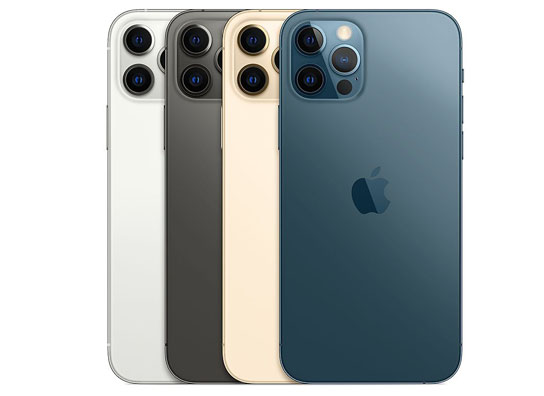
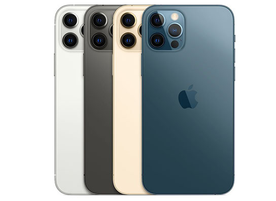

Devices Page
Links
Some of the most common forms of mobile computing devices are as given below:
- Portable computers, compact, lightweight units including a full character set keyboard and primarily intended as hosts for software that may be parameterized, such as laptops/desktops, smartphones/tablets, etc.
- Smart cards that can run multiple applications but are typically used for payment, travel, and secure area access.
- Mobile phones, telephony devices which can call from a distance through cellular networking technology
- Wearable computers, mostly limited to functional keys and primarily intended as the incorporation of software agents, such as bracelets, key-less implants, etc.
 
